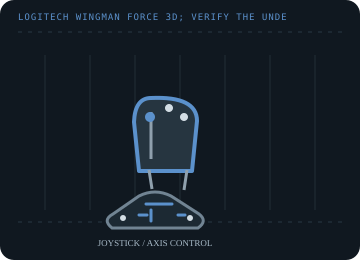

[ JOYSTICK CONTROLLERS // IDENTIFIED COMPONENT ]
Logitech WingMan Force 3D
USB force-feedback desktop joystick with three-dimensional stick control, twist rudder and integrated throttle.

MODEL IDENTIFICATION: Logitech WingMan Force 3D; verify the underside/cable label to distinguish the original from Force 3D Pro. Published family information does not establish the revision or condition of an individual unit; compare its label and included parts with the linked documentation.
Model specifications
| Catalog subcategory | Joystick controllers |
|---|---|
| Exact model / identifier | Logitech WingMan Force 3D; verify the underside/cable label to distinguish the original from Force 3D Pro. |
| Axes and buttons | Pitch/roll, twist rudder and throttle axes, trigger and programmable buttons/hat; the Force 3D adds active force effects for supported games. |
| Physical interface | Wired USB game controller using Logitech's legacy WingMan/DirectInput software and force-feedback path. |
| Sensors and protocol | Analog axes and host-commanded force-feedback effects; Logitech does not specify the physical axis sensor technology in its support page. |
| Power | USB-connected; check the individual device and its label for the original power arrangement before using a substitute cable or adapter. |
| Host OS and driver compatibility | Windows with legacy Logitech WingMan software and DirectInput games. Logitech retains an archived support record, but legacy utilities and force effects are not guaranteed on current operating systems. |
Setup and calibration
Use the operating system's Game Controllers test to center and calibrate pitch, roll, twist and throttle. Test effects from a DirectInput-compatible title; do not apply force while the grip or mechanism is obstructed.
Keep the operating-system baseline calibration and in-game sensitivity/dead-zone settings separate. Record the OS, driver, firmware and game used to test each axis and button.
Preservation and service notes
Inspect the cable, twist return, throttle slider and stick movement before powering. Store a copy of any known-good WingMan profile and distinguish this model from the Force 3D Pro by the chassis label.
For an archive specimen, photograph the model label, note all included cables/adapters and distinguish directly observed behavior from published specifications.
References and support
- Force 3D support — Logitech SupportManufacturer support page for the original Force 3D product family.
- Getting Started — Force 3D — Logitech SupportManufacturer setup guidance for the WingMan Force 3D.
Vendor support pages and manual downloads can change. Preserve the applicable manual and installer with a legacy host image, and verify the printed revision before service.